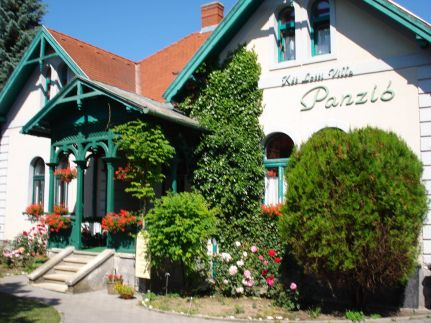
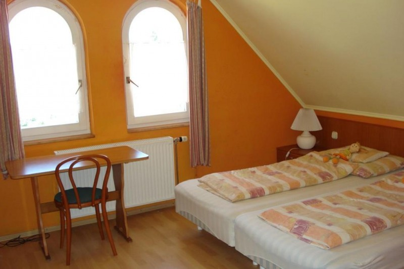
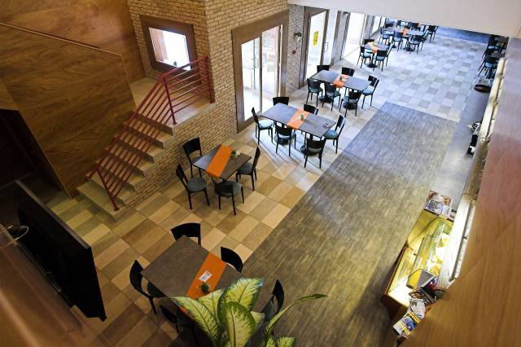
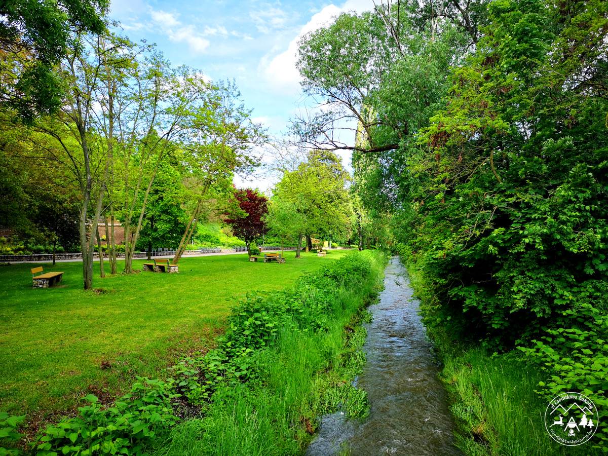
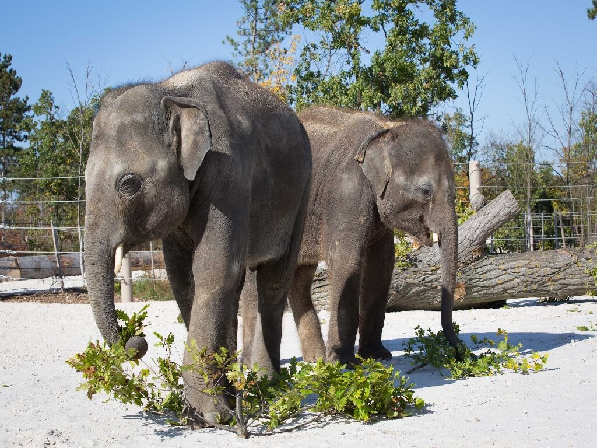
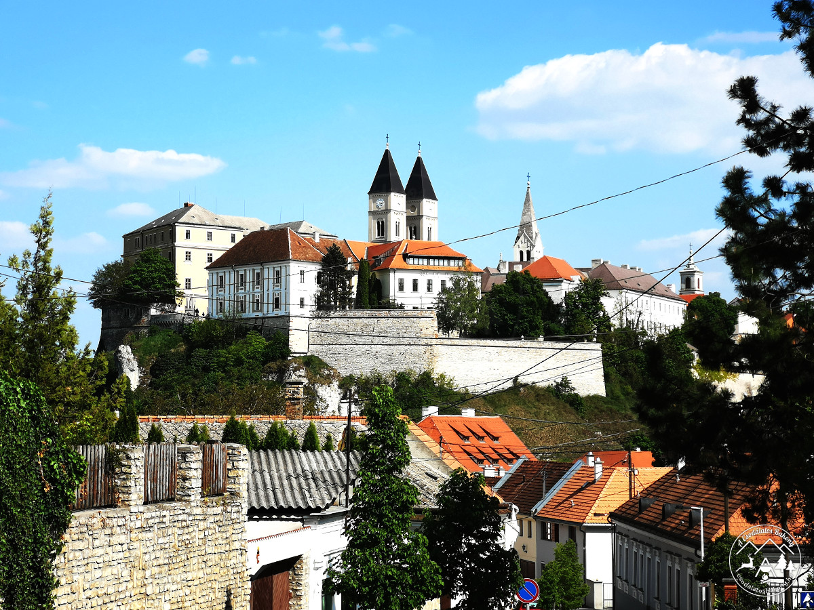
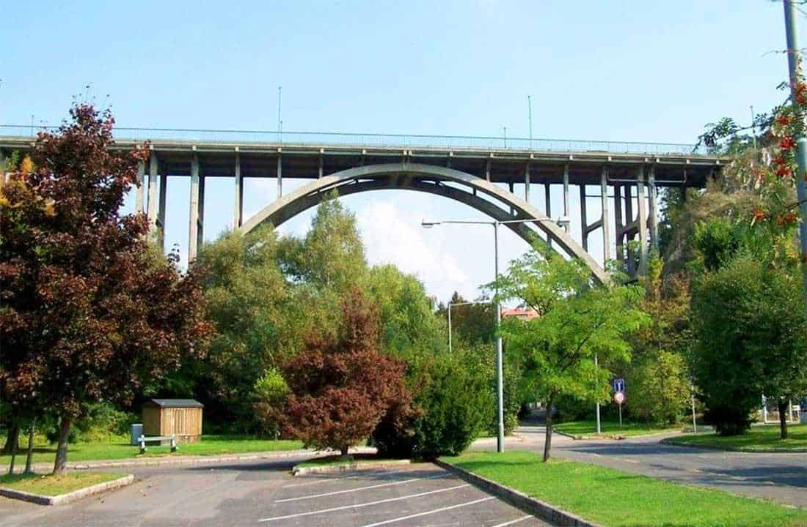
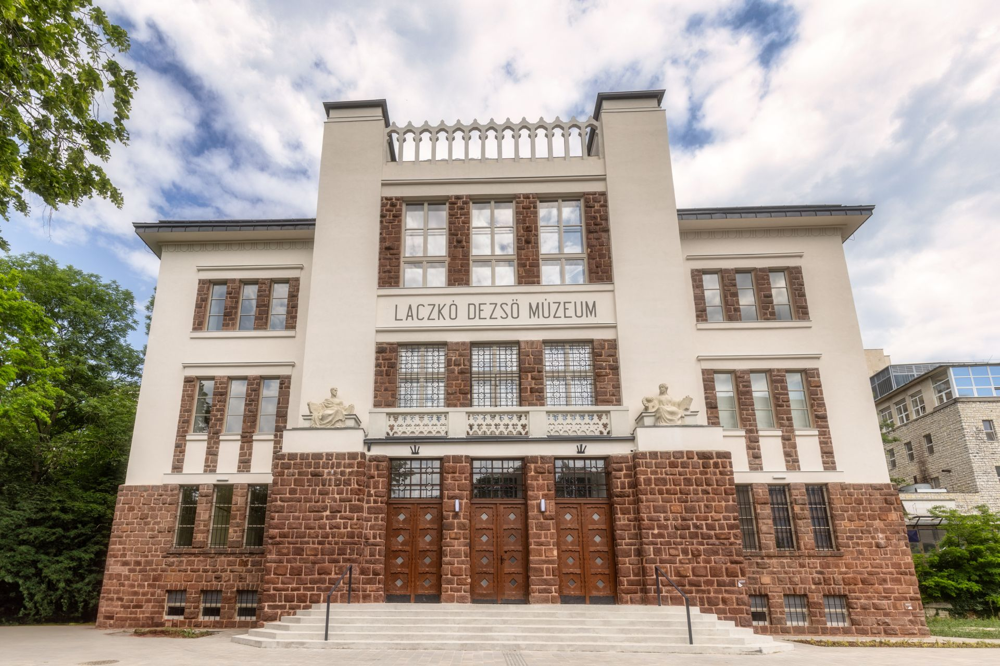
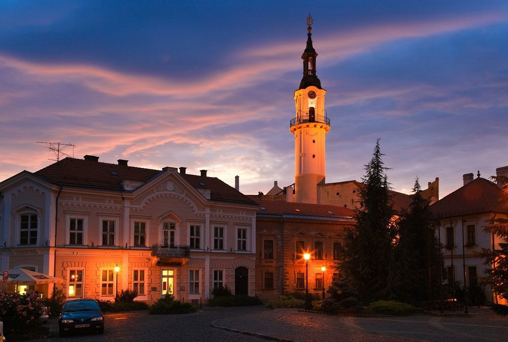

Veszprémbe fogunk utazni, a Két Lotti Villa-panzióba (8200 Veszprém, József Attila utca 21.). A szállás ára 682 400 Ft. Mindenki előre vesz magának országbérletet.


1. NAP
Osztálygyülekezőt szerveztem a Déli pályaudvarhoz 9:30-ra, mivel számítok arra, hogy néhány diák késni fog. A 10:00-kor induló IC 904 BAKONY InterCity Szombathely felé tartó vonattal tervezzük az utazást, amelynek elvileg 11:28-ra kellene megérkeznie Veszprémbe. Reméljük, minden rendben lesz, és nem lesznek problémák az úton. Az állomástól körülbelül 5 percet gyalogolunk, majd a Vámosi úti fordulónál várunk, és felszállunk a 4A helyi járatos buszra, amelynek 11:38-kor kellene érkeznie. Többen írják, hogy ez a járat sokszor késik. A busszal körülbelül 22 percet utazunk, majd dél körül a Szegfű utcai megállónál szállunk le. A megálló a Két Lotti Villa-panziótól körülbelül 2 percre található, és a szállást már leszálláskor is látni fogjuk. A szállást még nem foglaljuk el, mivel erre csak 13:00 órától van lehetőség, de a bőröndjeinket leadjuk a recepción. Ezt megelőzően az a terv, hogy a hosszú út után elmegyünk ebédelni. Erre a Völgyikút Ház panziójának éttermét szeretnénk igénybe venni. Olcsó, és az ételek fenomenálisak. (120 000 Ft összesen a 3 napra.) Ezután visszamegyünk a szállásra, és elfoglaljuk a szobáinkat. Körülbelül 14:00 óra felé indulunk el az állatkert irányába, de előtte egy kisebb kitérőt teszünk a Séd-pataki sétányhoz. Megnézzük a régi épületeket és látványosságokat. Ezek után az állatkertbe megyünk, és körbenézzük az összes állatot. Elvileg ez Magyarország egyik legkülönlegesebb állatkertje. (126 700 Ft.) Körülbelül 19:00 óráig tervezünk maradni, és mivel az állatkert közel van a szálláshoz, visszasétálunk.



2. NAP
A kelés körülbelül 9:00–10:00 között lesz, majd 10:30-kor reggelizünk, és hideg élelmet is csomagolnak nekünk. Miután mindennel megvagyunk, elindulunk a veszprémi várhoz. Szép és olcsó hely (2 200 Ft/fő = 60 000 Ft), és nem kell sokat utazni: a 28-as busszal körülbelül 13 perc alatt odaérünk. Sok fotózásra alkalmas látnivalót találunk, és kilátópontokra is felmehetünk. Ha ezzel megvagyunk, továbbmegyünk a Séd-völgyhöz, és megnézzük a Kolostorok és Kerteket. A vár alatt található, így nem kell messzire menni. Természetközeli sétát is tehetünk, például hidakat és patakpartot láthatunk. Itt található egy 3 km-es sétaösvény is, amelyet Erzsébet-sétánynak neveznek. Mivel az ösvény összeköti a Viadukttal, azt is megnézzük. Szó eshet majd a veszprémi panorámáról és a híd történetéről is. Ez a program szintén ingyenes. A sok séta és kirándulás után visszaindulunk vacsorázni, mert addigra biztosan mindenki éhes lesz. Vacsora után visszamegyünk a szállásra, ahol pihenést tervezek, majd takarodó.


3. NAP
Ugyanúgy fog indulni, mint a második nap: 9:00–10:00 óra körül kelés és reggeli, viszont ezen a napon nem lesz hideg élelem. Erre a napra a Laczkó Dezső Múzeumot terveztem. Régészeti leleteket, valamint régészeti és interaktív csont-/váza-replikákat lehet megtekinteni. Akkor is jó program, ha esne az eső. Nagyjából olcsó (121 500 Ft), és nagyon közel található, körülbelül 10 perc sétára. Miután itt végeztünk, a veszprémi Tűztornyot célozzuk meg. Mivel ez is benne van a múzeum árában, így gyakorlatilag ingyenes. Nagyon közel van, és elég nagy látványosság. Ezek után visszaindulunk ebédelni, majd összepakolni, hogy elérjük a 16:32-es vonatot. Az ebédet körülbelül 14:00 órára tervezem. Miután megebédeltünk, visszaindulunk a szállásra, hogy összepakoljunk, pihenjünk és összeszedjük magunkat. 15:40 körül elhagyjuk a szállást, és a 15:56-os 4A busszal indulunk a vasútállomásra (Szegfű utca–Veszprém vasútállomás, 14 megálló). Az IC I903 BAKONY InterCity Budapest-Déli felé tartó vonattal utazunk, amely 16:32-kor indul, és 18:00 órára érkezik meg a Déli pályaudvarra. Innen mindenkit hazaküldünk.

